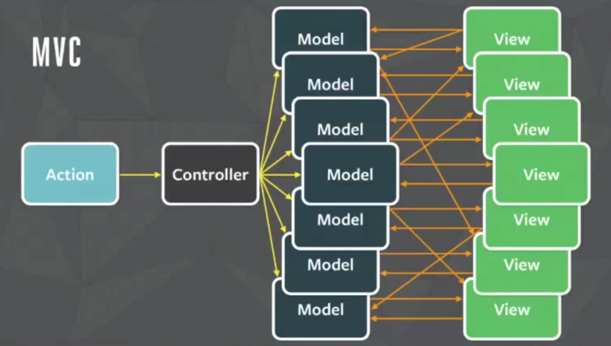

一個現代前端框架的不可或缺的觀念。
簡述
Flux 是一種「管理狀態的架構」。
在 Flux 推出之前，其實每個框架或是 library 都有各自管理狀態的方式：
- 在 jQuery 是「直接去改變畫面」
- 在 React 是「單向資料流」（只管 state）
- 在 Angular 或 Vue 是「雙向綁定」（改畫面 or 改資料）
然而當專案越來越大時，狀態管理就會變得越複雜，單靠原本的方式其實會有一些問題，所以臉書後來就推出了 Flux 這套架構來解決。
想知道臉書當時碰到什麼問題跟 Flux 更多的細節可以參考這部影片
總之呢，以 React 來說，我們原本在操作 state 的方式是這樣子：
view 點了某個按鈕 -> 更新 state -> view 收到新的 state
附註：view 指的就是 React，畢竟它本來就把自己定義成一個 UI 庫。
而變成 Flux 以後的流程是：
view 點了某個按鈕 -> dispatch 一個 action -> store 裡的 reducer 根據 action 回傳新的 state -> view 收到新的 state
看起來多了一大堆繁瑣的步驟，但這樣子做其實是有原因的，可以先參考下面這兩張圖：
1. MVC 架構下的流程

2. Flux 架構下的流程

簡單來說，在 MVC 裡面任何人都可以隨便去改 state，但在 Flux 下就不行了，不管要做什麼得透過 action + dispatch 來做。
在沒有採用 Flux 這種架構時，要追蹤問題點會很困難，因為大家都可以直接去改 state，就會很難知道是誰改的？什麼時候改的？
但是當採用了 Flux 以後，要追蹤 bug 時就能有一個直接的線索，像是「某個 action 是從哪個 view 發出的？」或是「state 是被哪個 action 改的？」等等。
所以這也是為什麼後來臉書會採用 Flux 的原因，其實回歸到原點還是為了管理狀態而已。